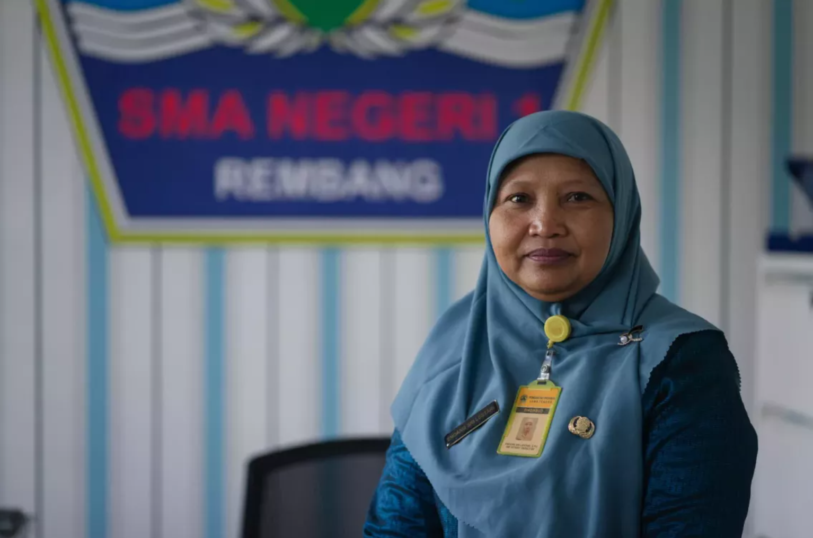

Selamat Datang di SMA Negeri 1 Rembang
Website resmi yang menyajikan informasi sekolah, program peminatan, hingga cara menghubungi kami.
Selamat Datang di SMA Negeri 1 Rembang

Selamat datang di website resmi SMA Negeri 1 Rembang. Kami hadir untuk memberikan informasi mengenai sekolah, kegiatan, prestasi, serta berbagai hal yang menjadi bagian dari kehidupan dan perkembangan sekolah.
Semoga website ini dapat menjadi sarana informasi yang bermanfaat bagi seluruh pengunjung.
Visi & Misi
Landasan yang menjadi pedoman SMA Negeri 1 Rembang dalam menyelenggarakan pendidikan bagi seluruh siswa.
“Berjatidiri dan Maju dalam Prestasi”
-
1
Mewujudkan lembaga pendidikan yang bernuansa keagamaan, kebangsaan, keilmuan, dan wawasan lingkungan.
-
2
Mewujudkan lembaga pendidikan yang memiliki daya saing sampai di tingkat internasional.